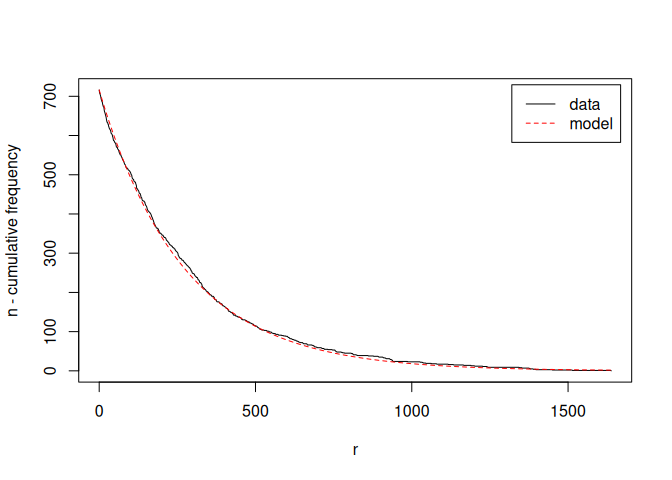

Maintainer: Michael Hahsler
This R package extends arules with NBMiner, an implementation of the model-based mining algorithm for NB-frequent itemsets described in Michael Hahsler’s paper, “A model-based frequency constraint for mining associations from transaction data.” Data Mining and Knowledge Discovery, 13(2):137-166, September 2006.
This algorithm dynamically chooses support for itemsets based on the deviation from an independence model. The package also supports mining NB-precise rules.
Installation
Stable CRAN version: Install from within R with
install.packages("arulesNBMiner")Current development version: Install from r-universe.
install.packages("arulesNBMiner",
repos = c("https://mhahsler.r-universe.dev",
"https://cloud.r-project.org/"))Usage
Estimate negative binomial distribution (NBD) model parameters for the Agrawal data set.
library("arulesNBMiner")
data("Agrawal")
param <- NBMinerParameters(Agrawal.db, pi = 0.99, theta = 0.5, maxlen = 5, minlen = 1,
trim = 0, verbose = TRUE, plot = TRUE)## using Expectation Maximization for missing zero class
## iteration = 1 , zero class = 3 , k = 0.99 , m = 278
## iteration = 2 , zero class = 3 , k = 0.99 , m = 278
## total items = 719
Mine NB-frequent itemsets
itemsets_NB <- NBMiner(Agrawal.db, parameter = param, control = list(verbose = TRUE,
debug = FALSE))##
## parameter specification:
## pi theta n k a minlen maxlen rules
## 0.99 0.5 719 0.99 0.0014 1 5 FALSE
##
## algorithmic control:
## verbose debug
## TRUE FALSEInspect some itemsets with the highest precision.
References
- Michael Hahsler, A model-based frequency constraint for mining associations from transaction data. Data Mining and Knowledge Discovery, 13(2):137-166, September 2006. Preprint on ArXiv
- Michael Hahsler, Sudheer Chelluboina, Kurt Hornik, and Christian Buchta. The arules R-package ecosystem: Analyzing interesting patterns from large transaction datasets. Journal of Machine Learning Research, 12:1977-1981, 2011.